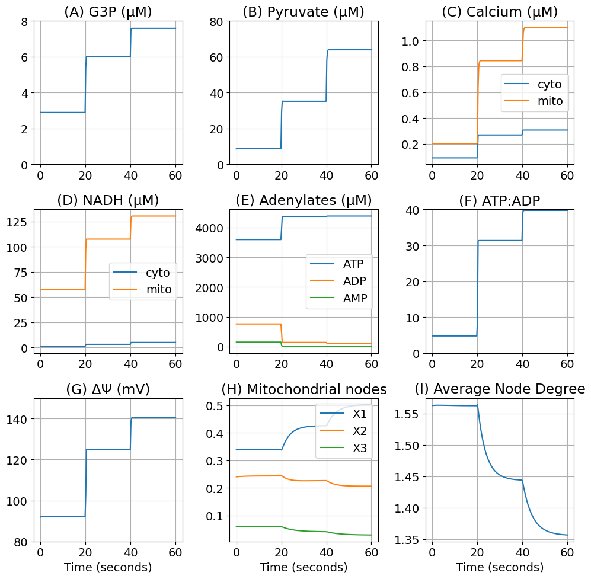
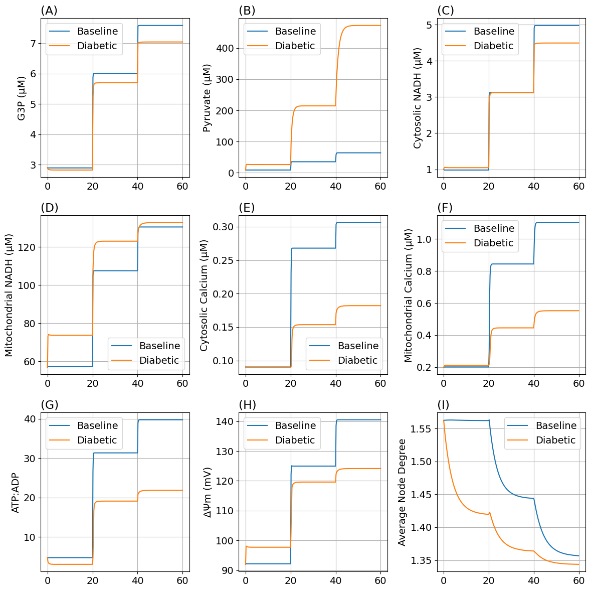
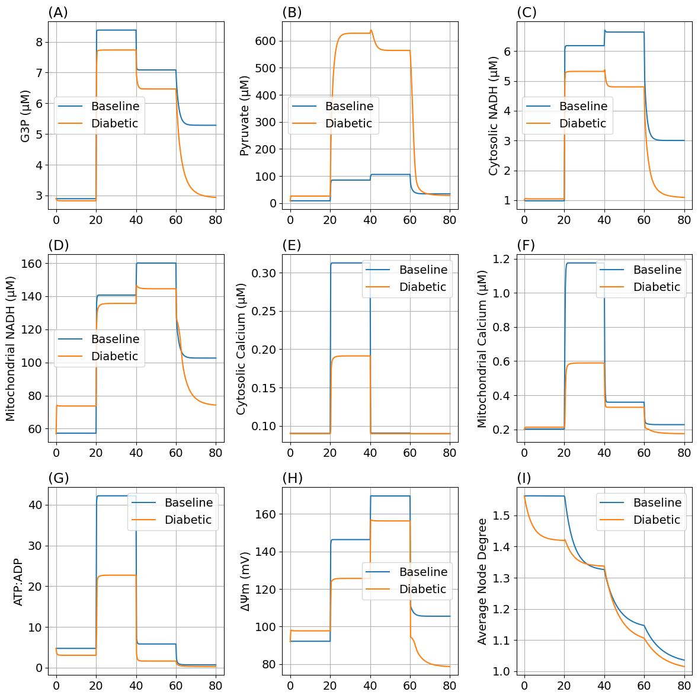
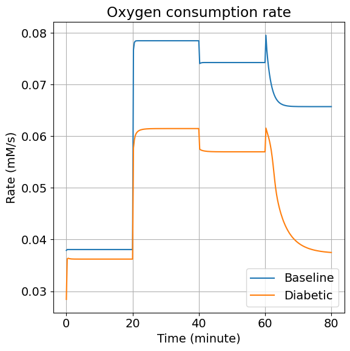
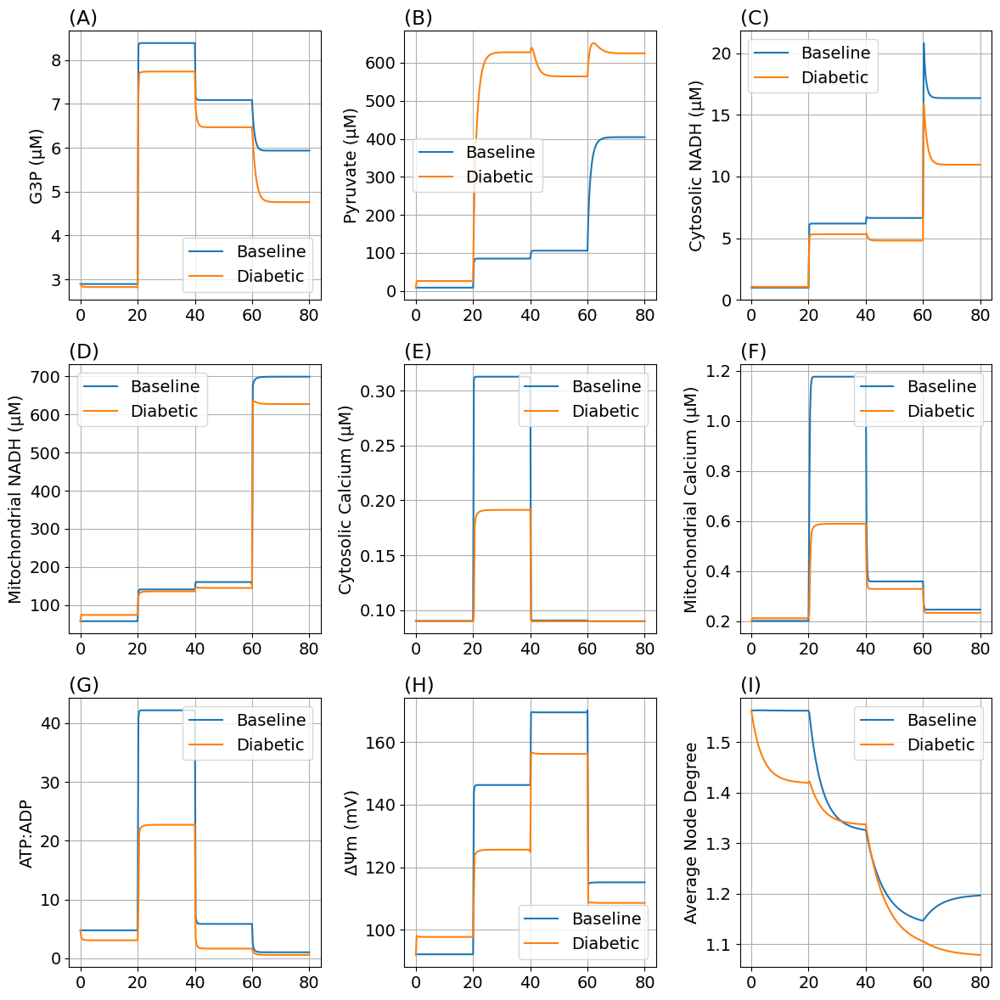
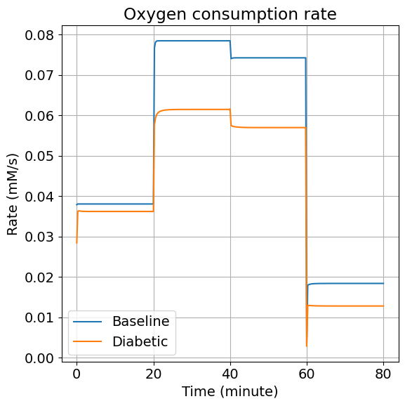

Supplmentary figures
Contents
Supplmentary figures#
using DifferentialEquations
using ModelingToolkit
using MitochondrialDynamics
using MitochondrialDynamics: GlcConst, VmaxPDH, pHleak, VmaxF1, VmaxETC, J_ANT, J_O2
using MitochondrialDynamics: G3P, Pyr, NADH_c, NADH_m, Ca_c, Ca_m, ΔΨm, ATP_c, ADP_c, AMP_c, degavg, t, x
using MitochondrialDynamics.Utils: second, μM, mV, mM, Hz, minute
import PyPlot as plt
rcParams = plt.PyDict(plt.matplotlib."rcParams")
rcParams["font.size"] = 14
# rcParams["font.sans-serif"] = "Arial"
# rcParams["font.family"] = "sans-serif"
┌ Info: Precompiling MitochondrialDynamics [1a231dcf-63c2-466e-8f46-4027ba595b90]
└ @ Base loading.jl:1662
14
Figure S1#
Supplementary figure 1: Response to elevated glucose concentrations in steps.
function glc_step(t)
return 5.0mM * (1 + (t >= 20minute) + (t >= 40minute))
end
tend = 60minute
@named sys = make_model(; glcrhs=glc_step(t))
prob = ODEProblem(sys, [], tend)
sol = solve(prob, tstops=[20minute, 40minute]);
function plot_figs1(
sol;
figsize=(10, 10),
tspan=(0.0, 60minute),
density::Int=201,
tight=true
)
ts = LinRange(tspan[1], tspan[2], density)
tsm = ts ./ 60
g3p = sol.(ts, idxs=G3P) .* 1000
pyr = sol.(ts, idxs=Pyr) .* 1000
nadh_c = sol.(ts, idxs=NADH_c) .* 1000
nadh_m = sol.(ts, idxs=NADH_m) .* 1000
ca_c = sol.(ts, idxs=Ca_c) .* 1000
ca_m = sol.(ts, idxs=Ca_m) .* 1000
atp_c = sol.(ts, idxs=ATP_c) .* 1000
adp_c = sol.(ts, idxs=ADP_c) .* 1000
amp_c = sol.(ts, idxs=AMP_c) .* 1000
dpsi = sol.(ts, idxs=ΔΨm) .* 1000
k = sol.(ts, idxs=degavg)
x1 = sol.(ts, idxs=x[1])
x2 = sol.(ts, idxs=x[2])
x3 = sol.(ts, idxs=x[3])
fig, ax = plt.subplots(3, 3; figsize)
ax[1, 1].plot(tsm, g3p)
ax[1, 1].set(title="(A) G3P (μM)", ylim=(0.0, 8.0))
ax[1, 2].plot(tsm, pyr)
ax[1, 2].set(title="(B) Pyruvate (μM)", ylim=(0.0, 80.0))
ax[1, 3].plot(tsm, ca_c, label="cyto")
ax[1, 3].plot(tsm, ca_m, label="mito")
ax[1, 3].set(title="(C) Calcium (μM)")
ax[1, 3].legend()
ax[2, 1].plot(tsm, nadh_c, label="cyto")
ax[2, 1].plot(tsm, nadh_m, label="mito")
ax[2, 1].set(title="(D) NADH (μM)")
ax[2, 1].legend()
ax[2, 2].plot(tsm, atp_c, label="ATP")
ax[2, 2].plot(tsm, adp_c, label="ADP")
ax[2, 2].plot(tsm, amp_c, label="AMP")
ax[2, 2].set(title="(E) Adenylates (μM)")
ax[2, 2].legend()
ax[2, 3].plot(tsm, atp_c ./ adp_c)
ax[2, 3].set(title="(F) ATP:ADP", ylim=(0, 40))
ax[3, 1].plot(tsm, dpsi)
ax[3, 1].set(title="(G) ΔΨ (mV)", ylim=(80, 150), xlabel="Time (seconds)")
ax[3, 2].plot(tsm, x1, label="X1")
ax[3, 2].plot(tsm, x2, label="X2")
ax[3, 2].plot(tsm, x3, label="X3")
ax[3, 2].set(title="(H) Mitochondrial nodes", xlabel="Time (seconds)")
ax[3, 2].legend()
ax[3, 3].plot(tsm, k)
ax[3, 3].set(title="(I) Average Node Degree", xlabel="Time (seconds)")
for a in ax
a.grid()
end
fig.set_tight_layout(tight)
return fig
end
plot_figs1 (generic function with 1 method)
figs1 = plot_figs1(sol);

# Uncomment if pdf file is required
# figs1.savefig("FigS1.tif", dpi=300, format="tiff", pil_kwargs=Dict("compression" => "tiff_lzw"))
Figure S2 : DM step response#
Response to adding glucose in healthy and DM cells.
In the diabetic parameter set. We adjusted
PDH capacity
ETC capacity
F1 synthase capacity
Proton leak rate
pidx = Dict(k => i for (i, k) in enumerate(parameters(sys)))
function make_dm_prob(prob; rPDH=0.5, rETC=0.75, rHL=1.4, rF1=0.5)
p = copy(prob.p)
idxVmaxPDH = pidx[VmaxPDH]
idxpHleak = pidx[pHleak]
idxVmaxF1 = pidx[VmaxF1]
idxVmaxETC = pidx[VmaxETC]
p[idxVmaxPDH] *= rPDH
p[idxpHleak] *= rHL
p[idxVmaxF1] *= rF1
p[idxVmaxETC] *= rETC
return remake(prob, p=p)
end
make_dm_prob (generic function with 1 method)
probDM = make_dm_prob(prob)
solDM = solve(probDM, tstops=[20minute, 40minute]);
function plot_figs2(sol, solDM;
tspan=(0.0, 60minute),
density=301,
figsize=(12, 12),
labels=["Baseline", "Diabetic"],
tight=true
)
ts = range(tspan[1], tspan[2], length=density)
tsm = ts ./ 60
g3p = sol.(ts, idxs=G3P) .* 1000
pyr = sol.(ts, idxs=Pyr) .* 1000
nadh_c = sol.(ts, idxs=NADH_c) .* 1000
nadh_m = sol.(ts, idxs=NADH_m) .* 1000
ca_c = sol.(ts, idxs=Ca_c) .* 1000
ca_m = sol.(ts, idxs=Ca_m) .* 1000
atp_c = sol.(ts, idxs=ATP_c) .* 1000
adp_c = sol.(ts, idxs=ADP_c) .* 1000
td = atp_c ./ adp_c
dpsi = sol.(ts, idxs=ΔΨm) .* 1000
k = sol.(ts, idxs=degavg)
g3pDM = solDM.(ts, idxs=G3P) .* 1000
pyrDM = solDM.(ts, idxs=Pyr) .* 1000
nadh_cDM = solDM.(ts, idxs=NADH_c) .* 1000
nadh_mDM = solDM.(ts, idxs=NADH_m) .* 1000
ca_cDM = solDM.(ts, idxs=Ca_c) .* 1000
ca_mDM = solDM.(ts, idxs=Ca_m) .* 1000
atp_cDM = solDM.(ts, idxs=ATP_c) .* 1000
adp_cDM = solDM.(ts, idxs=ADP_c) .* 1000
tdDM = atp_cDM ./ adp_cDM
dpsiDM = solDM.(ts, idxs=ΔΨm) .* 1000
kDM = solDM.(ts, idxs=degavg)
fig, ax = plt.subplots(3, 3; figsize)
ax[1, 1].plot(tsm, g3p, label=labels[1])
ax[1, 1].plot(tsm, g3pDM, label=labels[2])
ax[1, 1].set(ylabel="G3P (μM)")
ax[1, 1].set_title("(A)", loc="left")
ax[1, 2].plot(tsm, pyr, label=labels[1])
ax[1, 2].plot(tsm, pyrDM, label=labels[2])
ax[1, 2].set(ylabel="Pyruvate (μM)")
ax[1, 2].set_title("(B)", loc="left")
ax[1, 3].plot(tsm, nadh_c, label=labels[1])
ax[1, 3].plot(tsm, nadh_cDM, label=labels[2])
ax[1, 3].set(ylabel="Cytosolic NADH (μM)")
ax[1, 3].set_title("(C)", loc="left")
ax[2, 1].plot(tsm, nadh_m, label=labels[1])
ax[2, 1].plot(tsm, nadh_mDM, label=labels[2])
ax[2, 1].set(ylabel="Mitochondrial NADH (μM)")
ax[2, 1].set_title("(D)", loc="left")
ax[2, 2].plot(tsm, ca_c, label=labels[1])
ax[2, 2].plot(tsm, ca_cDM, label=labels[2])
ax[2, 2].set(ylabel="Cytosolic Calcium (μM)")
ax[2, 2].set_title("(E)", loc="left")
ax[2, 3].plot(tsm, ca_m, label=labels[1])
ax[2, 3].plot(tsm, ca_mDM, label=labels[2])
ax[2, 3].set(ylabel="Mitochondrial Calcium (μM)")
ax[2, 3].set_title("(F)", loc="left")
ax[3, 1].plot(tsm, td, label=labels[1])
ax[3, 1].plot(tsm, tdDM, label=labels[2])
ax[3, 1].set(ylabel="ATP:ADP")
ax[3, 1].set_title("(G)", loc="left")
ax[3, 2].plot(tsm, dpsi, label=labels[1])
ax[3, 2].plot(tsm, dpsiDM, label=labels[2])
ax[3, 2].set(ylabel="ΔΨm (mV)")
ax[3, 2].set_title("(H)", loc="left")
ax[3, 3].plot(tsm, k, label=labels[1])
ax[3, 3].plot(tsm, kDM, label=labels[2])
ax[3, 3].set(ylabel="Average Node Degree")
ax[3, 3].set_title("(I)", loc="left")
for a in ax
a.grid()
a.legend()
end
fig.set_tight_layout(tight)
return fig
end
plot_figs2 (generic function with 1 method)
figs2 = plot_figs2(sol, solDM);

# Uncomment if pdf file is required
# figs2.savefig("FigS2.tif", dpi=300, format="tiff", pil_kwargs=Dict("compression" => "tiff_lzw"))
Figure S3#
Changes in response to both glucose stimulation and chemical agents.
Using the Glucose-Oligomycin-FCCP protocol.
add_glucose(t) = 5mM + 15mM * (t >= 20minute)
add_oligomycin(t) = 1.0 - 0.95 * (t >= 40minute)
add_rotenone(t) = 1.0 - 0.95 * (t >= 60minute)
add_fccp(t) = 1.0 + 9.0 * (t >= 60minute)
add_fccp (generic function with 1 method)
tend = 80minute
@named syss3 = make_model(;
glcrhs=add_glucose(t),
rf1=add_oligomycin(t),
rhleak=add_fccp(t)
)
probs3 = ODEProblem(syss3, [], tend)
probs3DM = make_dm_prob(probs3; rPDH=0.5, rETC=0.75, rHL=1.4, rF1=0.5)
tstops = [20minute, 40minute, 60minute]
sols3 = solve(probs3; tstops)
solDMs3 = solve(probs3DM; tstops)
figs3 = plot_figs2(sols3, solDMs3; tspan=(0.0, tend));

# Uncomment if pdf file is required
# figs3.savefig("FigS3.tif", dpi=300, format="tiff", pil_kwargs=Dict("compression" => "tiff_lzw"))
Figure S4#
Oxygen consumption in response to both glucose stimulation and chemical agents.
function plot_jo2(sol, solDM;
tspan=(0.0, 80minute),
labels=["Baseline", "Diabetic"],
density=301,
figsize=(6, 6),
tight=true
)
ts = range(tspan[1], tspan[2], length=density)
tsm = ts ./ 60
jo2 = sol.(ts, idxs=J_O2)
jo2DM = solDM.(ts, idxs=J_O2)
fig, ax = plt.subplots(; figsize)
ax.plot(tsm, jo2, label=labels[1])
ax.plot(tsm, jo2DM, label=labels[2])
ax.set(xlabel="Time (minute)", ylabel="Rate (mM/s)", title="Oxygen consumption rate")
ax.grid()
ax.legend()
fig.set_tight_layout(tight)
return fig
end
plot_jo2 (generic function with 1 method)
figs4 = plot_jo2(sols3, solDMs3, tspan=(0.0, tend));

# Uncomment if pdf file is required
# figs4.savefig("FigS4.tif", dpi=300, format="tiff", pil_kwargs=Dict("compression" => "tiff_lzw"))
Figure S5#
Baseline vs. Diabetic models using Glucose-Oligomycin-Rotenone protocol.
@named sys2 = make_model(;
glcrhs = add_glucose(t),
rf1 = add_oligomycin(t),
retc = add_rotenone(t)
)
\[\begin{split} \begin{align}
\frac{dNADH_{m(t)}}{dt} =& 69.44444444444444 J_{DH}\left( t \right) + 69.44444444444444 J_{NADHT}\left( t \right) - 69.44444444444444 J_{O2}\left( t \right) - kNADHm \mathrm{NADH}_{m}\left( t \right) \\
\frac{dNADH_{c(t)}}{dt} =& 1.8867924528301885 J_{GPD}\left( t \right) - 1.8867924528301885 J_{LDH}\left( t \right) - 1.8867924528301885 J_{NADHT}\left( t \right) - kNADHc \mathrm{NADH}_{c}\left( t \right) \\
\frac{dCa_{m(t)}}{dt} =& 0.020833333333333332 J_{MCU}\left( t \right) - 0.020833333333333332 J_{NCLX}\left( t \right) \\
\frac{d\Delta{\Psi}m(t)}{dt} =& - 0.5518763796909492 J_{ANT}\left( t \right) - 0.5518763796909492 J_{HF}\left( t \right) - 0.5518763796909492 J_{HL}\left( t \right) + 0.5518763796909492 J_{HR}\left( t \right) - 1.1037527593818983 J_{MCU}\left( t \right) \\
\frac{dG3P(t)}{dt} =& 3.773584905660377 J_{GK}\left( t \right) - 1.8867924528301885 J_{GPD}\left( t \right) - kG3P \mathrm{G3P}\left( t \right) \\
\frac{dPyr(t)}{dt} =& - 1.836884643644379 J_{CAC}\left( t \right) + 1.836884643644379 J_{GPD}\left( t \right) - 1.836884643644379 J_{LDH}\left( t \right) - kPyr \mathrm{Pyr}\left( t \right) \\
\frac{dATP_{c(t)}}{dt} =& 1.8867924528301885 J_{ADK}\left( t \right) + \left( - kATP - kATPCa \mathrm{Ca}_{c}\left( t \right) \right) \mathrm{ATP}_{c}\left( t \right) + 1.8867924528301885 J_{ANT}\left( t \right) - 3.773584905660377 J_{GK}\left( t \right) + 3.773584905660377 J_{GPD}\left( t \right) \\
\frac{dAMP_{c(t)}}{dt} =& 1.8867924528301885 J_{ADK}\left( t \right) \\
\mathrm{\frac{d}{d t}}\left( x(t)_2 \right) =& - v(t)_2 + v(t)_1 \\
\mathrm{\frac{d}{d t}}\left( x(t)_3 \right) =& v(t)_2
\end{align}
\end{split}\]
prob2 = ODEProblem(sys2, [], tend)
prob2DM = make_dm_prob(prob2; rPDH=0.5, rETC=0.75, rHL=1.4, rF1=0.5)
sols5 = solve(prob2)
sols5DM = solve(prob2DM)
figs5 = plot_figs2(sols5, sols5DM; tspan=(0.0, tend));

# Uncomment if pdf file is required
# figs5.savefig("FigS5.tif", dpi=300, format="tiff", pil_kwargs=Dict("compression" => "tiff_lzw"))
Figure S6#
Oxygen consumption of Baseline and Diabetic models using the protocol from Figure S5.
figs6 = plot_jo2(sols5, sols5DM);

# Uncomment if pdf file is required
# figs6.savefig("FigS6.tif", dpi=300, format="tiff", pil_kwargs=Dict("compression" => "tiff_lzw"))